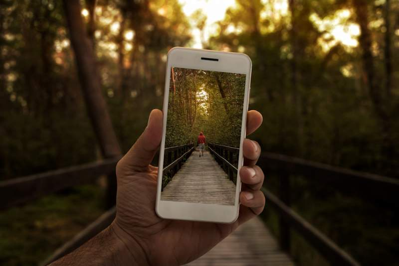

How To Take Good Facebook Pictures
General Tips

Content Menu
- Tip 1
- Tip 2
- Tip 3
- Tip 4
- Tip 5
Tip 1: The Setup
Hold the camera as far away from your body as possible.
Try using a selfie stick, tripod, or even asking a stranger to take the photo.
Having the phone farther away will help prevent distortion and generally yields better photos.
Tip 2: Lighting
Make sure the light is not too harsh or too dim.
Taking photos between 10am and 3pm usually means the light will be too harsh
unless you find a protected area where the sunlight doesn’t fall directly on you.
Tip 3: Angle
If you take photos after dusk you might need some external light
sources to keep your face well-lit and the image clear.
Take the photo from a higher angle. Higher angles are preferred by many and when done
well, look more natural.
Tip 4: Posture
Just don’t hold the camera too high. Keep your poses natural and unforced.
Most communication that occurs between people
is nonverbal, and for that reason we’ve become adept at figuring out
what’s natural and what’s staged.
Tip 5: Others
Try to keep your poses as relaxed and
natural as possible, as it’s noticeable when a pose is stiff and forced.
Look for symmetry. The human brain has been proven to favor patterns and symmetry.
Playing into that tendency often yields more visually appealing photos.
For example, placing the subject of the image next to a reflective surface often produces
interesting and relaxed photos.
Interested in other hobbies of ours? Check out
Main Page
and
About Us